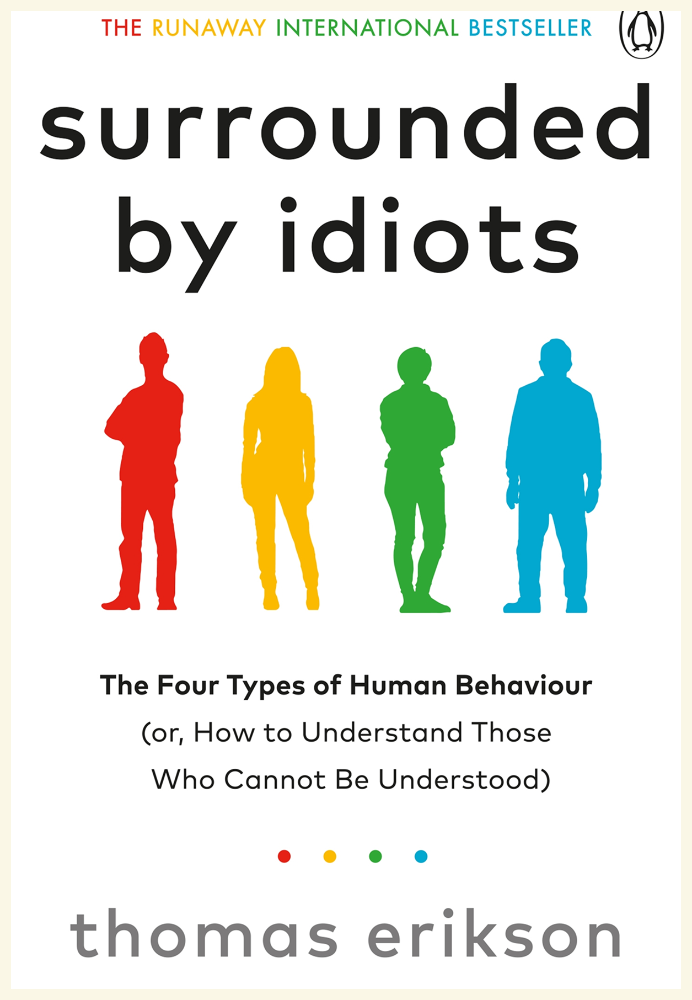

2014
Communication
Synopsis
Relying on the four-color DISC assessment framework (Red, Yellow, Green, Blue), the book categorizes human behavior and profiles communication styles. It explains how different personality types handle conflicts, social cues, and collaborative professional settings.
Author Background
Thomas Erikson is a Swedish behaviorist, lecturer, and leadership coach. He has spent over twenty years advising major corporations, executives, and management teams on how to optimize workplace communication. Aside from his mainstream behavioral non-fiction books, Erikson is also an accomplished crime fiction novelist in Sweden.
Why Read This Book
It is an accessible toolkit for improving interpersonal communication, empathy, and social dynamics. Reading it helps minimize workplace frictions and social misunderstandings by teaching you how to adjust your communication style to match the "color" of the person you are interacting with.